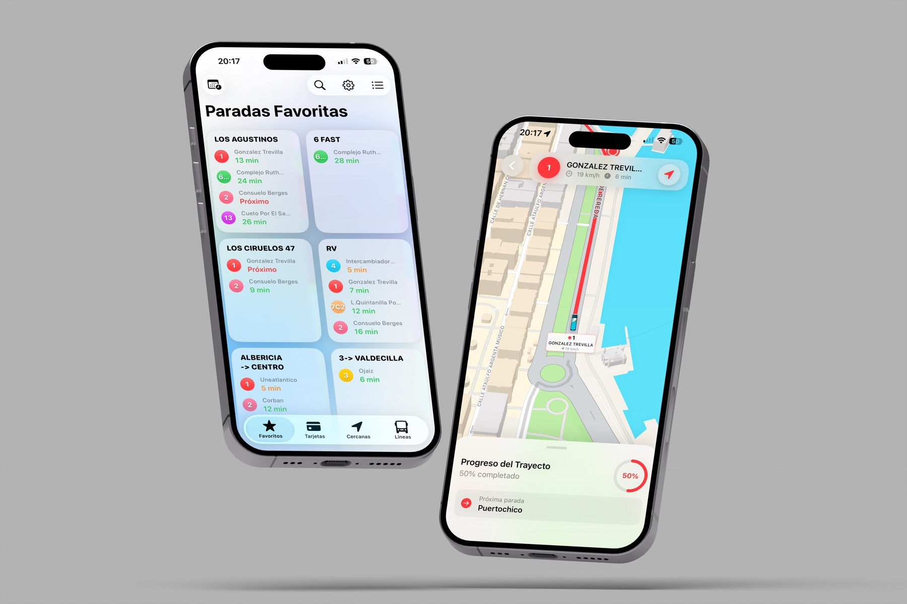
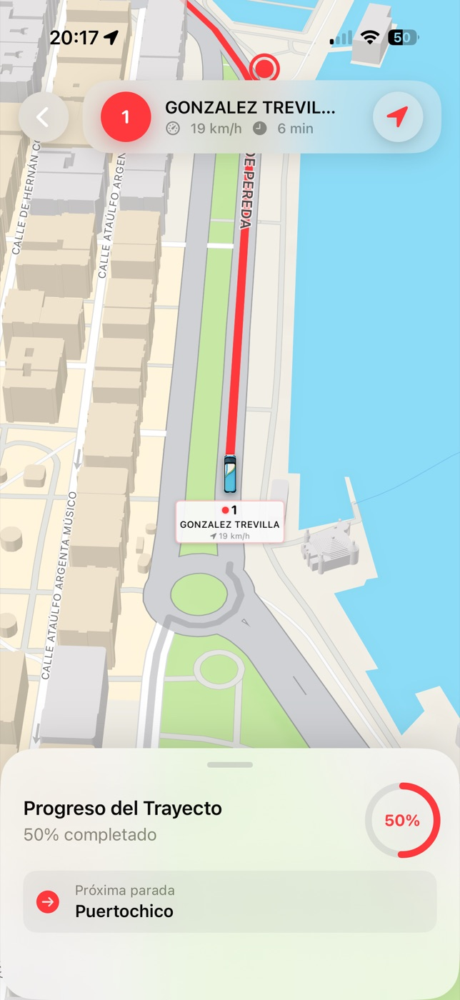
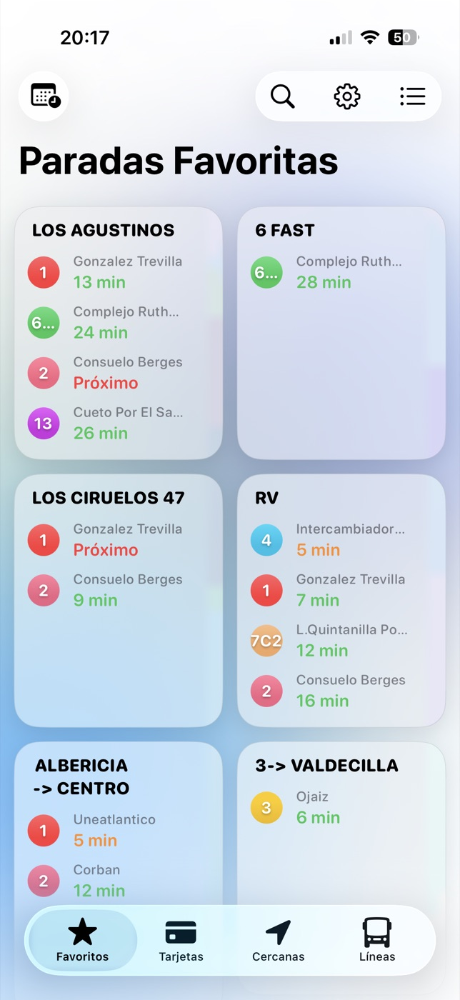

Viajes más vivos
Seguimiento, superficies del sistema y más contexto durante el trayecto.
BUSGo! 3.0 ya está aquí
Autobuses, Cercanías, ALSA, rutas, paradas y avisos. Todo lo que necesitas para moverte por Santander, en una sola app.

Actual · 27 ago 2026
Un nuevo diseño, más redes de transporte y una forma más natural de encontrar tu próximo trayecto.
Información que se mueve contigo
Consulta próximas llegadas y sigue el servicio desde una interfaz creada para entender qué está pasando en segundos.

Una parada útil en la web
Introduce el número de una parada del TUS. La consulta se activa solo cuando tú la solicitas y nunca bloquea la carga de la página.
Información orientativa proporcionada por fuentes externas. Si el servicio en directo no responde, BUSGo! sigue disponible en la App Store.
Más que autobuses
BUSGo! reúne TUS, Cercanías de Cantabria y ALSA para ayudarte a comprender el trayecto completo sin saltar entre aplicaciones.
Tu copiloto
La misma interfaz se adapta al momento del viaje.

Ecosistema Apple
iPhone, iPad, Apple Watch, Live Activities y App Clip: consulta lo importante con menos fricción.
43.4623° N · 3.8099° W
Una app independiente creada para resolver un problema muy local: moverse por la ciudad con menos dudas y menos esperas.
BUSGo! utiliza fuentes oficiales cuando corresponde, pero no es una aplicación oficial del Ayuntamiento de Santander.
Siempre en movimiento
Una historia de producto desde 1.0 hasta hoy.
BUSGo!+
Funciones avanzadas para acompañarte más de cerca, con las opciones disponibles siempre actualizadas dentro de la app.
Seguimiento, superficies del sistema y más contexto durante el trayecto.
Favoritos, alertas y una experiencia adaptada a tu manera de moverte.
Accede a las funciones premium disponibles en la versión actual.
Preguntas frecuentes
No. BUSGo! es un proyecto independiente que presenta información procedente de fuentes oficiales cuando corresponde.
La versión 3.0 integra TUS, Cercanías de Cantabria y ALSA en líneas, paradas, mapas y rutas multimodales.
La ficha actual de la aplicación indica que no requiere conexión a cuentas externas.
BUSGo! diferencia la información en directo de los horarios de respaldo para que puedas entender el estado de los datos.
Consulta la página de soporte o escribe a javi@javib.es.
Última parada
Descarga BUSGo! gratis y lleva Santander contigo.
Descargar BUSGo!